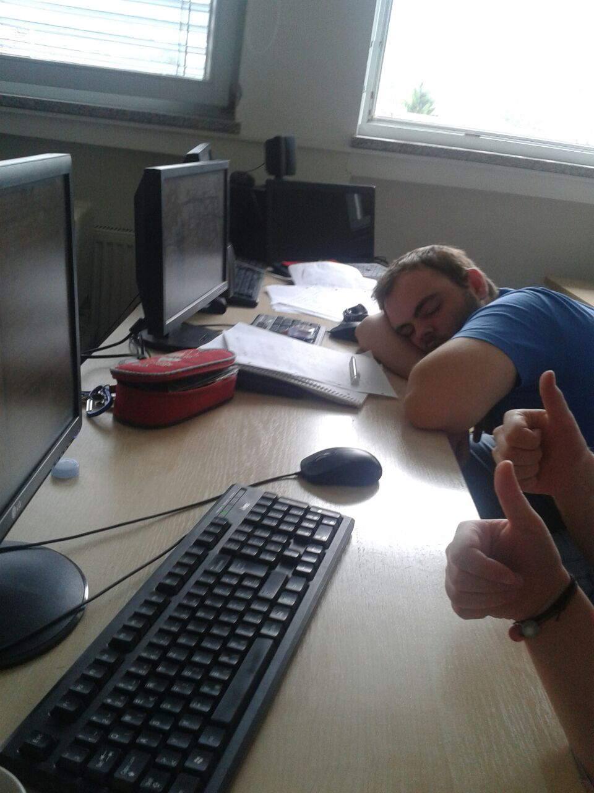

sieben.fr/s3_2015/final_talk
# Our project
- Creating a website
- Understanding how the web works
# Materials and Methods
- Treat the web as a phenomenon and dissect it
- Build a web server yourself
Raspberry pi
# Wireshark
- Capture packets and reveal information about them
# The web in 2 minutes
- Web browsers send HTTP requests to a web server
- HTTP is a simple protocols built around verbs (GET, POST)
- HTTP is a text protocol => easy to inspect
# How to manage information?
1. Get the temperature
2. Put it into a database
3. Manage incoming web requests
4. Render a web page with the latest data
# Let's get started

# Python
Get the temperature and act as a glue between everything

- General purpose language
- Easy to learn
- Shipped with Raspberry Pi
Flask
HTTP requests manager
from flask import Flask
app = Flask(__name__)
@app.route("/")
def hello():
return "Hello World!"
if __name__ == "__main__":
app.run()
import redis
r = redis.Redis()
r.rpush("temperature list", 42)
# It works :-)
For a live version, check out [flower.sieben.fr](flower.sieben.fr)
# What we learned
- A little about programming
- A little about the web
# Further improvements
- Make it prettier on many more devices
- Make the server send information when temperature is updated
THE END
Final report is online :-)

Work hard, play hard, sleep hard